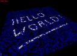

The following examples show how the Proland edit plugin tasks and producers can be used. Since each example builds upon the previous ones, you should read them in order.
Edit1 example

This example is based on the "terrain3" example from the terrain plugin, with two modifications: first the elevation producer is replaced with an edit elevation producer, allowing dynamic terrain shape modifications, and second the main window class is converted to an Ork resource, for greater flexibility.
To edit the terrain, click or drag the mouse while holding the SHIFT key pressed. You can also change the brush radius with the mouse wheel, while holding the SHIFT key pressed. See also the tweak bar to configure the edition tool. Press "e" to enable and disable terrain edition.
Dynamic terrain edition
In order to allow dynamic terrain edition, the default elevation producer must be replaced with a proland::EditElevationProducer. This producer requires an associated residual producer (unlike the default elevation producer; also it cannot have layers). So we first start by defining a residual producer (here without any associated file, which means that we will start with a completely flat terrain):
<tileCache name="groundResiduals" scheduler="defaultScheduler"> <cpuFloatTileStorage tileSize="197" channels="1" capacity="1024"/> </tileCache> <editResidualProducer name="groundResiduals1" cache="groundResiduals"/>
We can then use this residual producer to define our edit elevation producer:
<editElevationProducer name="groundElevations1" cache="groundElevations" residuals="groundResiduals1" terrain="terrainNode" edit="terrainShader" brush="brushShader;"/>
Here we need to specify the scene node using this producer, in the "terrain" attribute, as well as the shader used to render the terrain, in the "edit" shader (this shader will be responsible to draw the edition brush on the terrain), and the shader defining how brush strokes modify the terrain elevations, in the "brush" attribute.
Note that, in order to specify the terrain scene node, this scene node must be a valid resource, identified by its name. In the "terrain3" example this terrain node is declared directly as a subnode of the scene graph node, and so cannot be loaded separately from the whole scene. In order to solve this problem we move its definition outside the definition of the scene graph node, and we then simply reference it:
<node name="terrainNode" flags="object,dynamic"> <bounds xmin="-50000" xmax="50000" ymin="-50000" ymax="50000" zmin="0" zmax="5000"/> <field id="terrain" value="terrain"/> <tileSamplerZ id="elevation" sampler="elevationSampler" producer="groundElevations1" storeInvisible="false"/> <tileSampler id="fnormal" sampler="fragmentNormalSampler" producer="groundNormals1" storeParent="false" storeInvisible="false"/> <mesh id="grid" value="quad.mesh"/> <method id="update" value="updateTerrainMethod"/> <method id="draw" value="drawTerrainMethod"/> <module id="material" value="terrainShader"/> </node> <node name="scene"> <node flags="camera"> <method id="draw" value="cameraMethod"/> </node> <node name="t" value="terrainNode"/>
We finally add a tweak bar allowing the user to configure the terrain edition tool, and to reset the terrain to its original shape:
<tweakDem name="editDem" active="true"/> <tweakScene name="editScene" scene="scene" active="false"/> <tweakBarManager name="tweakBar" next="viewHandler"> <editor id="scene" bar="editScene" exclusive="false"/> <editor id="dem" bar="editDem" key="e" exclusive="true"/> </tweakBarManager>
We set its active state to "true" so that it is active by default when the application starts. We also associate the shortcut key "e" to this tweak bar, in order to activate or deactivate it with this key. We finally specify that this tweak bar can not be active at the same time as another bar, with the "exclusive" flag.
The "brushShader.glsl" file defines how brush strokes modify the terrain elevations. This shader is given as input the positions and radiuses of the extremities of a stroke segment (it is executed once per segment), in "stroke" and "strokeEnd", as well as a brush "elevation", in "brushElevation". It must output an elevation at each point p in the alpha channel, which will then be blended with the current terrain elevations. In this particular implementation the output is computed based on the distance from p to the stroke segment, using a smoothstep function of this distance (but other choices are possible, you can modify this shader as you want).
The "initShader.glsl" and "composeShader.glsl" are shaders that are needed by the proland::EditElevationProducer, with these exact names. They are used to initialize a tile before drawing brush strokes in it ("initShader" must copy the current elevations from "initSampler" in the rgb channels, reset the blue channel to the red channel, and reset the alpha channel to 0), and to compose the current elevations with the brush strokes ("composeShader" must update the modified elevation in the blue channel by composing it with the brush elevation in the alpha channel - in this implementation the two are simply added, but you can change this if needed).
Finally the edition brush is displayed on the terrain with the following additional code in "terrainShader.glsl":
if (length(p.xy - pencil.xy) < pencil.w) {
data += pencilColor;
}
where "pencil" and "pencilColor" are uniforms set by the event handler associated with the terrain edition tweak bar (in the shader specified in the "edit" attribute of the edit elevation producer, here "terrainShader").
Window resource
In this example, for greater flexibility, the main window class is converted to an Ork resource. We can thus declare and configure it in the "helloworld.xml" archive file:
<helloworld name="window" ui="tweakBar" view="viewHandler"/>
where "viewHandler" is the proland::BasicViewHandler, now declared as an Ork resource as well:
<basicViewHandler name="viewHandler" viewManager="window"/>
which allows us to also declare the link between the tweak bar manager event handler and the view event handler in the resources, with the "next" attribute (see sec-terrain3-ui):
<tweakBarManager name="tweakBar" next="viewHandler">
Finally, to convert the HelloWorld C++ class into an Ork resource we mainly need to move the code in the HelloWorld constructor to the main function (because the constructor will now be called by the Ork resource loading mechanism, which must therefore be initialized before that) and to the constructor of a subclass, inheriting from ork::Resource, and defined as follows:
class HelloWorldResource : public ResourceTemplate<100, HelloWorld> { public: HelloWorldResource(ptr<ResourceManager> manager, const string &name, ptr<ResourceDescriptor> desc, const TiXmlElement *e = NULL) : ResourceTemplate<100, HelloWorld> (manager, name, desc) { e = e == NULL ? desc->descriptor : e; checkParameters(desc, e, "name,ui,view,radius,"); scene = new SceneManager(); scene->setResourceManager(manager); scene->setScheduler(manager->loadResource("defaultScheduler").cast<Scheduler>()); scene->setRoot(manager->loadResource("scene").cast<SceneNode>()); scene->setCameraNode("camera"); scene->setCameraMethod("draw"); ui = manager->loadResource(getParameter(desc, e, "ui")).cast<EventHandler>(); view = manager->loadResource(getParameter(desc, e, "view")).cast<BasicViewHandler>(); if (e->Attribute("radius") != NULL) { float radius; getFloatParameter(desc, e, "radius", &radius); controller = new PlanetViewController(scene->getCameraNode(), radius); } else { controller = new TerrainViewController(scene->getCameraNode(), 50000.0); } } virtual void doRelease() { if (manager != NULL) { manager->close(); } delete this; } };
ResourceTemplate is a C++ class template inheriting from ork::Resource and from the class specified as second template argument (the first argument is a priority to order resources during loading). Most of the code is in the constructor. This code checks that the XML attributes of the resource declaration are amongst "name", "ui", "view" and "radius". It then loads the "ui" and "view" resources to initialize the scene manager, in a similar way as in the original constructor of the "terrain3" example. A noticeable difference is that, depending on the value of "radius", a planet view controller or a "flat" view controller is instantiated.
The last step to be able to use this resource from an XML file is to declare the association between an XML tag name and the HelloWorldResource class. This is done as follows:
extern const char helloworld[] = "helloworld"; static ResourceFactory::Type<helloworld, HelloWorldResource> HelloWorldType;
The result of these changes is that it is now possible to choose the user interface components, the view handler and the kind of terrain (flat or spherical) without needing to recompile the main C++ class, i.e., only by changing the "helloworld.xml" file.
Edit2 example
This example is based on the "edit1" example, but with an ortho texture editor instead of an elevation editor (note: in this example we edit a texture which is directly used to render the terrain, but it is of course possible to edit any texture, like a tree density map for instance).
To edit the terrain texture, click or drag the mouse while holding the SHIFT key pressed. You can also change the brush radius with the mouse wheel, while holding the SHIFT key pressed. See also the tweak bar to configure the edition tool. Press "c" to enable and disable terrain texture edition.
In order to allow dynamic terrain texture edition, the default ortho producer must be replaced with a proland::EditOrthoProducer. This producer requires an associated residual producer (unlike the default ortho producer; also it cannot have layers). So we first start by defining a residual producer (here without any associated file, which means that we will start with a completely black terrain):
<tileCache name="groundOrthoCpu" scheduler="defaultScheduler"> <cpuByteTileStorage tileSize="196" channels="4" capacity="1024"/> </tileCache> <editOrthoCpuProducer name="groundOrthoCpu1" cache="groundOrthoCpu"/>
We can then use this residual producer to define our edit ortho producer:
<editOrthoProducer name="groundOrthoGpu1" cache="groundOrthoGpu" residuals="groundOrthoCpu1" terrain="terrainNode" edit="terrainShader" brush="brushOrthoShader;"/>
Here we need to specify the scene node using this producer, in the "terrain" attribute, as well as the shader used to render the terrain, in the "edit" shader (this shader will be responsible to draw the edition brush on the terrain), and the shader defining how brush strokes modify the terrain texture, in the "brush" attribute.
We finally add a tweak bar allowing the user to configure the terrain edition tool, and to reset the terrain texture to its original value:
<tweakOrtho name="editOrtho" active="true"/> <tweakScene name="editScene" scene="scene" active="false"/> <tweakBarManager name="tweakBar" next="viewHandler"> <editor id="scene" bar="editScene" exclusive="false"/> <editor id="ortho" bar="editOrtho" key="c" exclusive="true"/> </tweakBarManager>
We set its active state to "true" so that it is active by default when the application starts. We also associate the shortcut key "c" to this tweak bar, in order to activate or deactivate it with this key. We finally specify that this tweak bar can not be active at the same time as another bar, with the "exclusive" flag.
The "brushShader.glsl" file defines how brush strokes modify the terrain texture. This shader is given as input the positions and radiuses of the extremities of a stroke segment (it is executed once per segment), in "stroke" and "strokeEnd". It must output an alpha value at each point p, which will be used to blend the brush color with the current texture values. In this particular implementation the output is computed based on the distance from p to the stroke segment, using a smoothstep function of this distance (but other choices are possible, you can modify this shader as you want).
The "initOrthoShader.glsl" and "composeOrthoShader.glsl" are shaders that are needed by the proland::EditOrthoProducer, with these exact names. They are used to initialize a tile before drawing brush strokes in it ("initShader" must copy the current colors from "initSampler"), and to compose the current colors with the brush color ("composeShader" must compose the current colors in "sourceSampler" with the brush color in "brushColor", based on the alpha mask in "brushSampler" - in this implementation a simple alpha blending is done, but you can change this if needed).
Finally the edition brush is displayed on the terrain with the following additional code in "terrainShader.glsl":
if (length(p.xy - pencil.xy) < pencil.w) {
data += pencilColor;
}
where "pencil" and "pencilColor" are uniforms set by the event handler associated with the terrain edition tweak bar (in the shader specified in the "edit" attribute of the edit elevation producer, here "terrainShader").
Edit3 example

This example adds interactive graph edition capabilities to the "graph1" example from the graph plugin (based on the paper "Real-time rendering and editing of vector-based terrains", Eric Bruneton and Fabrice Neyret, Eurographics 2008). Press "e" to enable and disable this feature. When enabled, you can move the control points with the mouse, insert new control points at the current mouse position with the Insert key, delete the selected point or curve with the End key, etc. You can also right click on a control point or curve to perform various operations on them. Finally the tweak bar can be used to modify the width of the selected curve).
Enabling this feature is quite easy. We first add a proland::EditGraphOrthoLayer to the ortho GPU producer. This layer is responsible to draw the control points and curves when the edition mode is enabled (note that we removed the precomputed texture, replaced with an empty ortho layer; the "backgroundCache" attribute is thus no longer necessary):
<orthoGpuProducer name="groundOrthoGpu1" cache="groundOrthoGpu"> <emptyOrthoLayer name="background" color="200,200,200"/> <roadOrthoLayer name="roadOrtho1" graph="roads" renderProg="roadLayerOrthoShader;" quality="true"/> <editGraphOrthoLayer name="editGraph1" graphs="roads" terrain="terrainNode" renderProg="editLayerShader;"/> </orthoGpuProducer>
Here we specify that this layer will be used to edit the "roads" graph (you can specify multiple graphs here, separated with commas), in the "terrainNode" scene node, and that the control points and curves will be rendered with the "editLayerShader" shader. This shader is really basic, it simply selects a color based on the vertex z coordinate, which encodes the type of this vertex (selected or not, curve node or curve control point, etc).
Finally we add a proland::TweakGraphLayer tweak bar to control this layer, as follows:
<tweakGraphLayer name="editGraphs" active="true"/> <tweakBarManager name="ui"> <editor id="scene" bar="editScene" exclusive="false"/> <editor id="graphs" bar="editGraphs" exclusive="true"/> </tweakBarManager>
And that's it!
Edit4 example

This example adds interactive graph edition capabilities to the "river1" example from the river plugin (press "e" to enable and disable this feature. When enabled, you can move the control points with the mouse, insert new control points at the current mouse position with the Insert key, delete the selected point or curve with the End key, etc. You can also right click on a control point or curve to perform various operations on them. Finally the tweak bar can be used to modify the width and type of the selected curve).
Enabling this feature is quite easy. We first add a proland::EditHydroGraphOrthoLayer to the ortho GPU producer. This layer is responsible to draw the control points and curves when the edition mode is enabled:
<orthoGpuProducer name="groundOrthoGpu1" cache="groundOrthoGpu"> <emptyOrthoLayer name="background" color="200,200,200"/> <editHydroGraphOrthoLayer name="editGraph1" graphs="rivers" terrain="terrainNode" renderProg="editLayerShader;"/> </orthoGpuProducer>
Here we specify that this layer will be used to edit the "water" graph (you can specify multiple graphs here, separated with commas), in the "terrainNode" scene node, and that the control points and curves will be rendered with the "editLayerShader" shader.
Finally we add a proland::TweakHydroGraphLayer tweak bar to control this layer, as follows (we also add a proland::TweakRivers tweak bar to control the draw river task, but this is not necessary to simply edit the river graph):
<tweakHydroGraphLayer name="tweakGraphLayer1" active="true"/> <tweakRivers name="tweakRivers1" drawer="drawRiversMethod" active="true"/> <tweakBarManager name="ui"> <editor id="scene" bar="editScene" exclusive="false"/> <editor id="editor1" bar="tweakGraphLayer1" exclusive="true"/> <editor id="editor2" bar="tweakRivers1" exclusive="false"/> </tweakBarManager>
And that's it!